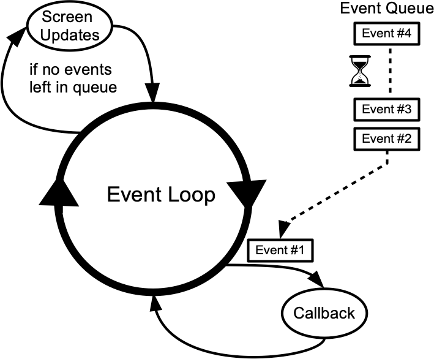
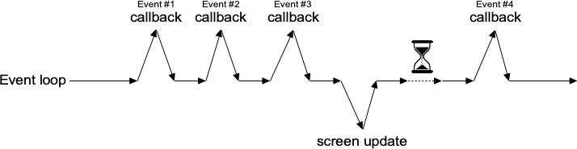
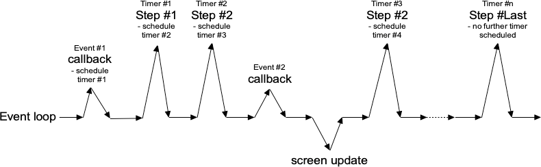

At the end of the last chapter, we explained how to use a progressbar to provide feedback to users about long-running
operations. The progressbar itself was simple: call it's start method, perform your operation, and then
call it's stop method. Unfortunately, you learned that if you tried this, your application will most
likely appear completely frozen.
To understand why, we need to revisit our discussion of event handling, way back in the Tk Concepts chapter. As we've seen, after we construct an application's initial user interface, it enters the Tk event loop. In the event loop, it continually processes events, pulled from the system event queue, usually dozens of times a second. It watches for mouse or keyboard events, invoking command callbacks and event bindings as needed.
Less obviously, all screen updates are processed only in the event loop. For example, you may change the text of a label widget. However, that change doesn't appear onscreen immediately. Instead, the widget notifies Tk that it needs to be redrawn. Later on, in between processing other events, Tk's event loop will ask the widget to redraw itself. All drawing occurs only in the event loop. The change appears to happen immediately because the time between making the change to the widget and the actual redraw in the event loop is so small.

Event loop showing application callbacks and screen updates.
Where you run into problems is when the event loop is prevented from processing events for a lengthy period of time. Your application won't redraw or respond to events and will appear to be frozen. The event loop is said to be blocked. How can this happen?
Let's start by visualizing the event loop as an execution timeline. In a normal situation, each deviation from the event loop (callback, screen update) takes only a fraction of a second before returning control to the event loop.

Execution timeline for well-behaved event loop.
In our scenario, the whole thing probably got started from an event like a user pressing a button. So the event loop calls our application code to handle the event. Our code creates the progressbar, performs the (lengthy) operations, and stops the progressbar. Only then does our code return control back to the event loop. No events have been processed in the meantime. No screen redrawing has occurred. They've just been piling up in the event queue.
Lengthy callback blocking the event loop.
To prevent blocking the event loop, it's essential that event handlers execute quickly and return control back to the event loop.
If you do have a long-running operation to perform, or anything like network I/O that could potentially take a long time, there are a few different approaches you can take.
For the more technically-inclined, Tk uses a single-threaded, event-driven programming model. All the GUI code, the event loop, and your application run within the same thread. Because of this, any calls or computations that block event handlers are highly discouraged. Some other GUI toolkits use different models that allow for blocking code, runs the GUI and event handlers in separate threads from application code, etc. Attempting to shoehorn these models into Tk can be a recipe for frustration and lead to fragile and hacky code. If you respect Tk's model rather than try to fight with it, you won't run into problems.
If possible, the very best thing you can do is break your operation into very small steps, each of which can execute very quickly. You let the event loop be responsible for when the next step occurs. That way, the event loop continues to run, processing regular events, updating the screen, and, in between all that, calling your code to perform the next step of the operation.
To do this, we make use of timer events. Our program can ask the event loop to generate one of these events at some time in the future. As part of its regular work, when the event loop reaches that time, it will call back into our code to handle the event. Our code would perform the next step of the operation. It then schedules another timer event for the next step of the operation and immediately returns control back to the event loop.

Breaking up a large operation into small steps tied together with timer events.
Tk's after command can be used to generate timer events. You provide the number of milliseconds to wait until the event should be fired.
It may happen later than that if Tk is busy processing other events but won't happen before that.
You can also ask that an idle event be generated; it will fire when no other events in the queue need to be processed.
(Tk's screen updates and redraws occur in the context of idle events.) You can find more details on after in
the reference manual.
In the following example, we'll perform a long operation that is broken up into 20 small steps. While this operation is being performed, we'll update a progressbar, and also allow users to interrupt the operation.
def start():
b.configure(text='Stop', command=stop)
l['text'] = 'Working...'
global interrupt; interrupt = False
root.after(1, step)
def stop():
global interrupt; interrupt = True
def step(count=0):
p['value'] = count
if interrupt:
result(None)
return
root.after(100) # next step in our operation; don't take too long!
if count == 20: # done!
result(42)
return
root.after(1, lambda: step(count+1))
def result(answer):
p['value'] = 0
b.configure(text='Start!', command=start)
l['text'] = "Answer: " + str(answer) if answer else "No Answer"
f = ttk.Frame(root); f.grid()
b = ttk.Button(f, text="Start!", command=start); b.grid(column=1, row=0, padx=5, pady=5)
l = ttk.Label(f, text="No Answer"); l.grid(column=0, row=0, padx=5, pady=5)
p = ttk.Progressbar(f, orient="horizontal", mode="determinate", maximum=20);
p.grid(column=0, row=1, padx=5, pady=5)Timer events take care of breaking up a long-running computation, where you know that each step can be guaranteed to complete quickly so that your handler will return to the event loop. What if you have an operation that may not complete quickly? This can happen when you make a variety of calls to the operating system. The most common is when we're doing some kind of I/O, whether writing a file, communicating with a database, or retrieving data from a remote web server.
Most I/O calls are blocking. They don't return until the operation completes (or fails). What we want to use instead are non-blocking or asynchronous I/O calls. When you make an asynchronous I/O call, it returns immediately, before the operation is completed. Your code can continue running, or in this case, return back to the event loop. Later on, when the I/O operation completes, your program is notified and can process the result of the I/O operation.
If this sounds like treating I/O as another type of event, you're exactly right. In fact, it's also called event-driven I/O.
In Python, asynchronous I/O is provided through the asyncio module, as well as many other modules that are
layered on top of it.
All asyncio applications rely heavily on an event loop. How convenient, Tkinter has a great event loop! Unfortunately, the asyncio event loop and the Tkinter event loop are not the same. You can't really have both of them running at the same time, at least within the same thread (well, you can have one call repeatedly into the other, but it's pretty hacky and fragile).
My recommendation: keep Tkinter in the main thread, and spin off your asyncio event loops in another thread.
Your application code, running in the main thread, may need to coordinate with the asyncio event loop running in the other thread.
You can call a function running in the asyncio event loop thread (even from the Tkinter event loop, e.g., in a widget callback)
using the asyncio call_soon_threadsafe method. To call Tkinter from the asyncio event loop, keep reading.
Sometimes it's either not possible or practical to break up a long-running computation into discrete pieces that each run quickly. Or you may be
using a library that doesn't support asynchronous operations. Or, like Python's asyncio, it doesn't play nice with Tk's event loop.
In cases like these, to keep your Tk GUI responsive, you'll need to move those
time-consuming operations or library calls out of your event handlers and run them somewhere else. Threads, or even other processes, can help with that.
Running tasks in threads, communicating with them, etc. is beyond the scope of this tutorial. However, there are some restrictions on using Tk with threads that you should be aware of. The main rule is that you must only make Tk calls from the thread where you loaded Tk.
Tkinter goes to great lengths internally so you make Tkinter calls from multiple threads. It routes them to the main thread (the one that created the Tk instance). It mostly works, but not always. Despite all it tries to do, I highly recommend you make all Tkinter calls from a single thread.
If you need to communicate from another thread to the thread running Tkinter, keep it as simple as possible. Use event_generate
to post a virtual event to the Tkinter event queue, and then bind to that event in your code.
It can be even more complicated. The Tcl/Tk libraries can be built either with or without thread support.
If you have more than one thread in your application, make sure you're running in a threaded build. If you're unsure, check the
Tcl variable tcl_platform(threaded); it should be 1, not 0.
>>> tkinter.Tcl().eval('set tcl_platform(threaded)')Most everyone should be running threaded builds. The ability to create non-threaded builds in Tcl/Tk is likely to go away in future. If you're using a non-threaded build with threaded code, consider this a bug in your application, not a challenge to make it work.
The previous three approaches are the correct ways to handle long-running operations while still keeping you Tk GUI responsive. What they have in common is a single event loop that continuously processes events of all kinds. That event loop will call event handlers in your application code, which do their thing and quickly return.
There is one other way. Within your long-running operation, you can invoke the event loop to process a bunch of events. You can do this with a single
command, update. There's no messing around with timer events or asynchronous I/O. Instead, you just sprinkle some update calls
throughout your operation. If you want to only keep the screen redrawing but not process other events, there's even an option for that (update_idletasks).
This approach is seductively easy. And if you're lucky, it might work. At least for a little while. But sooner or later, you're going to run into serious difficulties trying to do things that way. Something won't be updating, event handlers aren't getting called that should be, events are going missing or being fired out of order, or worse. You'll turn your program's logic inside out and tear your hair out trying to make it work again.
When you use update, you're not returning control back to the running event loop. You're effectively starting a new event loop nested
within the existing one. Remember, the event loop follows a single thread of execution: no threads, no coroutines. If you're not careful, you're going
to end up with event loops called from within event loops called from... well, you get the idea. If you even realize you're doing this, unwinding
the event loops (each of which may have different conditions to terminate it) will be an interesting exercise. The reality won't match with your mental model of
a simple event loop dispatching events one at a time, independent of every other event. It's a classic example of fighting against Tk's model.
In very specific circumstances, it's possible to make it work. In practice, you're asking for trouble. Don't say you haven't been warned...
Nested event loops... this way madness lies.